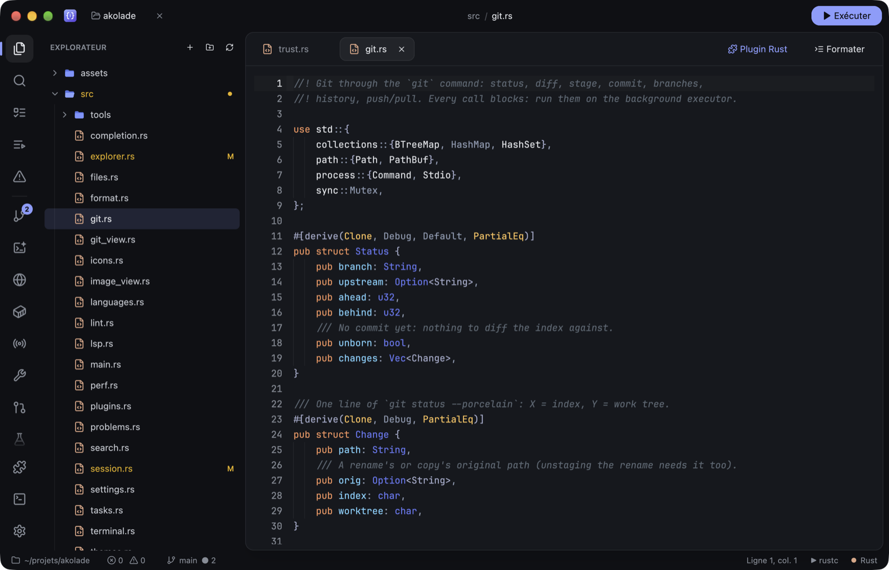
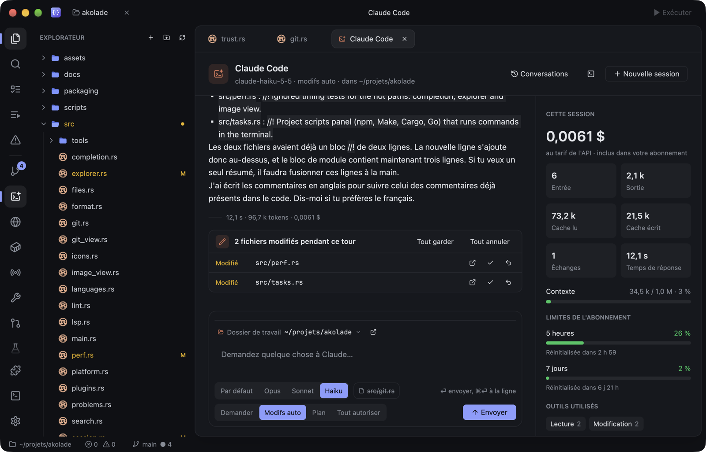
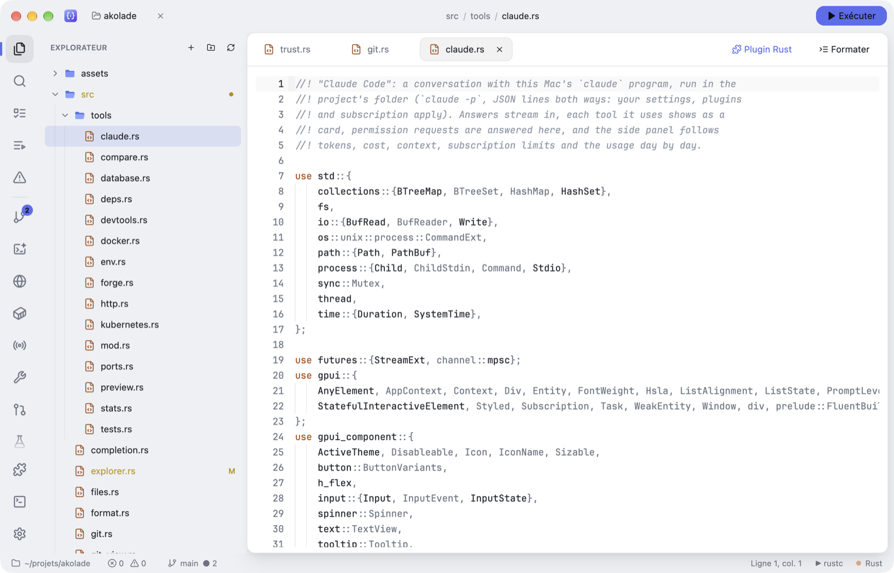

01
Ouvrir et écrire
L'explorateur marque les fichiers modifiés, la complétion classe les mots selon le contexte, ⌘. propose des corrections rapides et ⌘R lance le fichier ouvert.
Akolade est un éditeur de code natif, dessiné par la carte graphique. Il colore 35 langages, s'ouvre en 0,05 s et laisse Claude Code lire et modifier votre projet sous vos yeux. Un terminal, Git et quinze outils sont aussi de la partie.
Pour macOS, Windows et Linux. Tous les téléchargements
35 langages, chacun avec sa couleur, colorés par tree-sitter
La visite
L'explorateur marque les fichiers modifiés, la complétion classe les mots selon le contexte, ⌘. propose des corrections rapides et ⌘R lance le fichier ouvert.
Le diff de chaque fichier, l'indexation, les branches et les remises. Les lignes modifiées sont aussi marquées dans la marge.
Il lit, modifie et lance ses commandes sous vos yeux. Chaque action a sa carte, chaque fichier modifié se garde ou s'annule, et le coût de la session reste affiché à droite.
81 outils, plugins et thèmes dans le Store, installés en arrière-plan : complétion, formateurs, linters, Docker, Kubernetes, tests…
Vingt thèmes sombres ou clairs, huit façons de dessiner les fichiers, et l'import d'un thème VS Code.





Claude Code
Akolade utilise votre propre claude, avec vos réglages, vos plugins et votre abonnement. Aucune clé ne passe par l'éditeur.
git status * dans ce projet, puis ne redemande plus./ pour les commandes de Claude Code, de vos skills et de vos plugins.L'atelier des thèmes
Ce sont les vraies palettes d'Akolade, recopiées de son code source. Chaque thème colore l'interface, le code et le terminal.
1// Le relevé le plus chaud de la semaine2pub fn plus_chaud(releves: &[Releve]) -> Option<&Releve> {3 releves.iter()4 .filter(|r| r.ville != "Inconnue")5 .max_by(|a, b| a.temperature.total_cmp(&b.temperature))6}78const SEUIL: f32 = 38.5;
Les outils
Chaque outil ajouté depuis le Store a son icône dans la barre de gauche. Survolez-en un pour savoir ce qu'il fait.

Le mode restreint
Un dépôt téléchargé peut cacher des commandes que vos outils lancent tout seuls. Akolade ne les exécute pas tant que vous ne faites pas confiance au dossier.
Télécharger
macOS 11+, Windows 10/11 et Linux, en x64 comme en ARM.
xattr -dr com.apple.quarantine /Applications/Akolade.appakolade.exe.chmod +x akolade-linux-*.AppImage && ./akolade-linux-*.AppImagemesa-vulkan-drivers sur Intel et AMD, le pilote propriétaire sur NVIDIA.Chaque version publie aussi SHA256SUMS.txt. Toutes les versions sur GitHub
$ git clone https://github.com/emmanuellion/akolade.git $ cd akolade $ cargo run --release
Rust 1.85 ou plus récent et Git, sur macOS, Windows ou Linux (avec ses bibliothèques Vulkan et X11/Wayland).